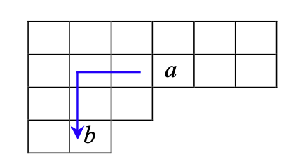

勃郁的豪情发过了酵，尖利的山风收住了劲，湍急的细流汇成了湖。
我们利用杨盘、标准杨图和杨定理来研究对称群Sn 的表示。
首先，我们简单回顾一下对称群Sn 的性质。
对称群Sn 是{1,2,...,n} 上所有置换的集合，关于置换的乘积构成了一个群。
置换群是对称群的子群。
每个置换都可以表示为若干个不相交轮换的乘积，也可以分解为若干个可能相交的对换的乘积。
例如
(132634415265)=(134)(265),
而一个轮换又可以分解成若干个对换乘积，这里给出两种分解方式：
(a1a2...am)=(a1a2)(a2a3)...(am−1am)=(a1am)(a1am−1)...(a1a3)(a1a2).
而且一个对换，又可以分解成若干个邻换，因为可以反复使用以下式子：
(a,a+k)=(a+1,a+k)(a,a+1)(a+1,a+k).
例如
(14)=(24)(12)(24)=(34)(23)(34)(12)(34)(23)(34).
因此，Sn 可以看作是由对换生成的，这样大大降低了求表示的复杂性，可以只对生成元求表示。
尽管一个置换的轮换分解不唯一，但是它的类型是唯一的。
置换类型是指一个置换的轮换分解中，轮换的长度序列。譬如一个(1ν1,2ν2,...,kνk) 型置换，就是指轮换分解中有νi 个长度为i 的轮换。
例如(134)(265) 是一个22 型置换。
而Sn 中类型为(1ν1,2ν2,...,kνk) 的置换个数为
1ν12ν2...kνkν1!ν2!...νk!n!.
共轭运算不改变置换类型。即对于任意σ,π∈Sn，σ 和πσπ−1 具有相同的置换类型。
我们知道对于一个Sn 中的置换，如果置换类型为(1ν1,2ν2,...,kνk)，那么
ν1+2ν2+...+kνk=n.
因为轮换长度和就是n。所以我们可以考虑定义一串单调下降的非负整数λ1,...,λk 为：
λ1=λ2=λk=ν1+...ν2+...+ν2+...+νk,νk,νk.
因此有λ1+λ2+...+λk=n。用[λ]=[λ1λ2...λk] 表示这样一组n 的分割。
不难发现，我们可以直接对n 作单调不下降的分割，譬如4 的分割有[4],[31],[22],[211],[1111]。每个分割都一一对应了一个Sn 中的置换类型。
因此
n 的不下降分割数 =Sn 中置换不同的类型数 =Sn 中类的个数 =Sn 的不等价、不可约表示的个数。
# 杨图、标准杨盘、杨算符
对于n 的一个分割[λ]=[λ1...λk]，可以定义对应[λ] 的杨图，第i 行有λi 个格子。例如n=5 时，分割和对应的杨图为：
不难发现杨图有n 个格子，然后我们在每个格子里不重复地填上1,2,...,n 中的一个数，且每行的数从左到右单调递增，每列的数从上到下单调递增。这样填完数字后就得到了一个标准杨盘。
一个分割对应一个杨图，而一个杨图对应了多个标准杨盘。我们用T[λ]i 表示对应于分割[λ] 的第i 个标准杨盘。例如n=3 时，有 3 个分割，分别有 1，2，1 个标准杨盘：
可以证明，对应于一个分割[λ] 的标准杨盘的个数为
f[λ]=∏i,jgi,jn!,
其中，gi,j 是杨图中第i 行第j 列的格子的钩长。譬如分割[643] 时，下左图蓝色点的钩长 = 4，右图为[643] 的每个点钩长填入了杨图中：
因此对应分割[643] 的标准杨盘个数为
f[643]=8⋅7⋅6⋅4⋅2⋅1⋅5⋅4⋅3⋅1⋅3⋅2⋅113!=6435.
特别地，f[n]=f[11...1]=1。
对应于同一个杨盘[λ] 的两个标准杨盘可以用一个置换σ∈Sn 来关联。譬如分割[21] 的两个标准杨盘就有(23)T1[21]=T2[21]：
接下来我们要定义杨算符了。
对于一个标准杨盘Tr[λ]，它的对称化算符P(Tr[λ]) 定义为每个行中数字的置换和，再乘起来。有点绕，直接看例子。对于下面这个标准杨盘T1[22]:
我们知道第一行两个数字1,2 有 2 个置换：e 和(12)。第二行同理也有 2 个置换：e 和(34)。因此
P(T1[22])=(e+(12))⋅(e+(34))=e+(12)+(34)+(12)(34).
类似地，我们定义Tr[λ] 的反对称化算符Q(Tr[λ]) 为每个列中数字置换的和的乘积，但是在求和中，如果一个置换是奇置换的话系数要变为 - 1。譬如
Q(T1[22])=(e−(12))⋅(e−(34))=e−(12)−(34)+(12)(34).
注意，其中e,(12)(34) 都是偶置换，因为有偶数个对换。而(12) 和(34) 都是奇置换，因为有奇数个对换。
那么我们定义Tr[λ] 的杨算符为
E(Tr[λ])=P(Tr[λ])⋅Q(Tr[λ]).
实际上可以验证，不同标准杨盘之间的杨算符是独立的。
# 第一种求Sn 不等价、不可约表示的方法（非酉表示）
根据之前所说，n 的分割数等于Sn 中类的个数，也等于不等价不可约表示的个数。
因此我们用分割[λ] 来标识一个不等价、不可约表示。即Sn 的所有不等价、不可约表示为
R[λ]:[λ] 是一个分割.
(杨定理) Sn 的不等价不可约表示R[λ] 的维数，等于分割[λ] 的标准杨盘个数：f[λ]。
下面我们以S3 为例，来说明如何求表示。
- 首先，我们求出所有n=3 的分割、杨图、标准杨盘。如下：
很显然有 3 个分割，其中第二个分割[21] 有f[21]=2 个标准杨盘，其余分割只有 1 个标准杨盘。
因此S3 有 3 个不等价不可约表示，维数分别为 1，2，1。
- 我们先求对应于分割[21] 的表示R[21]。它有两个标准杨盘。
先选取一个函数ψ(1,2,3) 对应于第一个杨盘T1[21]。根据T2[21]=(23)T1[21]，那么我们认为(23)ψ(1,2,3)=ψ(1,3,2) 为第二个杨盘的函数。
接下来我们构造基，这时需要用到杨算符。两个基函数Ψ1,Ψ2 等于直接把杨算符作用在对应的函数上：
Ψ1Ψ2=E(T1[21])ψ(1,2,3)=(e+(12))(e−(13))ψ(1,2,3)=(e+(12))(ψ(1,2,3)−ψ(3,2,1))=ψ(1,2,3)+ψ(2,1,3)−ψ(3,2,1)−ψ(3,1,2).=E(T2[21])ψ(1,3,2)=(e+(13))(e−(12))ψ(1,3,2)=ψ(1,3,2)+ψ(3,1,2)−ψ(2,3,1)−ψ(2,1,3).
注意，置换直接作用在ψ(x,y,z) 上对应的数字，而不是对应的位置。
此时我们已经构造出两个基了。然后不可约R[21](σ) 表示作用在基上，就等于直接把置换作用上去。即：
R[21](12)Ψ1R[21](12)Ψ2 R[21](13)Ψ1R[21](13)Ψ2=(12)(ψ(1,2,3)+ψ(2,1,3)−ψ(3,2,1)−ψ(3,1,2))=ψ(2,1,3)+ψ(1,2,3)−ψ(3,1,2)−ψ(3,2,1)=Ψ1,=(12)(ψ(1,3,2)+ψ(3,1,2)−ψ(2,3,1)−ψ(2,1,3))=ψ(2,3,1)+ψ(3,2,1)−ψ(1,3,2)−ψ(1,2,3)=−Ψ1−Ψ2.=(13)(ψ(1,2,3)+ψ(2,1,3)−ψ(3,2,1)−ψ(3,1,2))=ψ(3,2,1)+ψ(2,3,1)−ψ(1,2,3)−ψ(1,3,2)=−Ψ1−Ψ2,=(13)(ψ(1,3,2)+ψ(3,1,2)−ψ(2,3,1)−ψ(2,1,3))=ψ(3,1,2)+ψ(1,3,2)−ψ(2,1,3)−ψ(2,3,1)=Ψ2.
因此
R[21](12)=(10−1−1),R[21](13)=(−1−101).
其中是矩阵形式是左乘，即
(Ψ1Ψ2)(10−1−1)=(Ψ1−Ψ1−Ψ2).
这样我们就求出来了表示R[21]。
- 剩下再来求R[3] 和R[111]。对于R[3]，它只有一个标准杨盘，即维数是 1。那么只用定义一个函数ψ(1,2,3)，然后唯一的基
Ψ=E(T[3])ψ(1,2,3)=(e+(12)+(13)+(23)+(123)+(213))ψ(1,2,3)=ψ(1,2,3)+ψ(2,1,3)+ψ(3,2,1)+ψ(1,3,2)+ψ(2,3,1)+ψ(3,1,2).
而且不难验证，
R[3](12)Ψ=(12)(ψ(1,2,3)+ψ(2,1,3)+ψ(3,2,1)+ψ(1,3,2)+ψ(2,3,1)+ψ(3,1,2))=ψ(2,1,3)+ψ(1,2,3)+ψ(3,1,2)+ψ(2,3,1)+ψ(1,3,2)+ψ(3,2,1)=Ψ.
即R[3](12)=1。类似可以验证
R[3](e)=R[3](12)=R[3](13)=R[3](23)=R[3](123)=R[3](132)=1.
对于R[111] 的话，还是一维的，即一个函数ψ(1,2,3)，然后
Ψ=E(T[111])ψ(1,2,3)=(e−(12)−(13)−(23)+(123)+(132))ψ(1,2,3)=ψ(1,2,3)−ψ(2,1,3)−ψ(3,2,1)−ψ(1,3,2)+ψ(2,3,1)+ψ(3,1,2).
然后可以验证
R[111](e)=1,R[111](12)=R[111](13)=R[111](23)=−1,R[111](123)=R[111](132)=1.
- 至此，我们求完了所有S3 的表示R[3],R[21],R[111]。但是它们并不是酉的。
# 第二种求Sn 不等价、不可约表示的方法（酉表示）
根据之前分析，Sn 可以由邻换生成，所以我们只求邻换的表示。
这里我们直接给出结果。还是考虑杨图和标准杨盘。考虑对换(k−1,k)，酉表示U[λ]。
对于标准杨盘Tr[λ],r=1,...,f[λ]。
- 如果k−1,k 在Tr[λ] 的同一行，那么Ur,r[λ](k−1,k)=1.
- 如果k−1,k 在Tr[λ] 的同一列，那么Ur,r[λ](k−1,k)=−1.
- 如果k−1,k 不在Tr[λ] 同一行，同一列，然后(k−1,k)Tr[λ]=Ts[λ]。即标准杨盘在对换(k−1,k) 作用下变成了另一个标准杨盘Ts[λ]，那么
Ur,r[λ](k−1,k)=−ρ,Ur,s[λ](k−1,k)=1−ρ2,Us,r[λ](k−1,k)=1−ρ2,Us,s[λ](k−1,k)=ρ.
其中，ρ1=k−1 到k 在标准杨盘Tr[λ] 中的轴距离。即从k−1 走到k，往右往上的话 + 1，往左往下的话 - 1。譬如下图a 到b 的轴距离为 4:

- 其他情况Ur,s[λ](k−1,k)=0。
例如
U[21](12)=(100−1),U[21](23)=21(−1331),...
# Sn 到Sn−1 的分支律
我们知道对称群Sn−1 是Sn 的子群，所以Sn 的不可约表示Rn[λ] 在Sn−1 中往往是可约的。
我们希望研究：
Rn[λ]=λ′∑⊕Rn−1[λ′].
性质：Sn−1 的每个不可约表示在约化时只会出现一次，即不会出现Rn[λ]=Rn−1[λ′]⊕Rn−1[λ′]⊕... 的情况。
上式有时也会被称为Sn 到Sn−1 的分支律，记为Sn↓Sn−1。
结论非常简单有效：如果杨图T[λ] 中去掉某个格子后，还是一个杨图，那么这个杨图对应的不可约表示就会出现在Rn[λ] 的分解中。
直接看一个例子，考虑n=4 时，下面表示了它的杨图中哪些格子可以被去掉：
因此分支律S4↓S3 为：
R4[4]=R3[3]R4[31]=R3[21]⊕R3[3]R4[22]=R3[21]R4[211]=R3[21]⊕R3[111]R4[1111]=R3[111].
注意，我们要把Rn[λ] 限制在子群Sn−1 上看。
# 对称群的不可约表示的外积分解
我们首先简要介绍一下，对于一个子群H≤G，任何一个子群H 的表示R 都可以诱导出一个G 的表示。
如果子群H 的表示R 的表示空间是V，那么诱导出的G 的表示空间是
IndHGV={f:G→V:f(hg)=R(h)⋅f(g):∀h∈H,g∈G}.
即所有满足在子群H 的表示R 下左侧作用不变的函数的集合。
而这个空间的维数
dimIndHGV=[G:H]⋅dimV.
那么给定两个对称群Sn,Sm 的表示R[λ],R[μ]，它们的外积R[λ]×R[μ] 天然是群Sn×Sm 的一个表示。而群Sn×Sm≤Sn+m，所以R[λ]⊗R[μ] 可以诱导出一个Sn+m 的表示，记为R[λ]⊙R[μ]。
显然这个表示的维数为
[Sn+m:Sn×Sm]⋅dimR[λ]⋅dimR[μ]=n!m!(n+m)!⋅f[λ]⋅f[μ].
接下来我们考虑这个诱导出的表示，如何分解为Sn+m 中不等价不可约表示的直和：
R[λ]⊙R[μ]=ν∑⊕aνR[ν],
其中[ν] 是n+m 的分割。
此时需要用到 Littlewood 规则，通过杨图添加解决这个问题。
杨图T[ν] 是在杨图T[λ] 的基础上，先添加μ1 个标有α 的格子，再添加μ2 个标有β 的格子，再添加μ3 个标有γ 的格子，… 得到的。添加过程需要受到限制：
- 在添加过程中每一步都要构成一个杨图，并且由相同标号的方格不能排在同一列。
- 从第一行开始从右往左数，会得到α,β,γ 的一个序列，要求在任意前缀中 出现α 的次数≥ 出现β 的次数≥ 出现γ 的次数…
例：计算R[21]⊙R[21] 的分解。我们知道要往杨图T[21] 中添加 2 个α 和 1 个β。
先添加 2 个α，只需要注意让他们不在同一列即可。再添加 1 个β，此时需要注意第 2 个约束。添加完后如下图
因此
R[21]⊙R[21]=R[42]⊕R[411]⊕R[33]⊕R[321]⊕R[321]⊕R[3111]⊕R[222]⊕R[2211].
例：计算R[21]⊙R[111] 的分解。添加 1 个α 和 1 个β 和 1 个γ，结果如下：
因此
R[21]⊙R[111]=R[2111]⊕R[2211]⊕R[3111]⊕R[321].